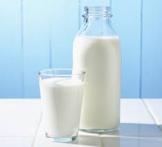
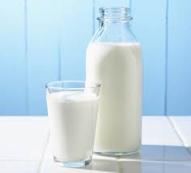

-
carbohydrate
-
carbohydrate is a biomolecule consisting of carbon, hydrogen and oxygen atoms usually with a hydrogen-oxygen atom ratio of 2:1

- yam
- rice
- garri
- indomie
- spaghetti
carbohydrate is a biomolecule consisting of carbon, hydrogen and oxygen atoms usually with a hydrogen-oxygen atom ratio of 2:1
Vitamins are organic molecules that are essential to an organism in small quantities for proper metabolic function.
 

Proteins are complex molecules and do most of the work in cells. They are important to the structure, function, and regulation of the body.

Fats and oils are composed of molecules known as triglycerides, which are esters composed of three fatty acid units linked to glycerol